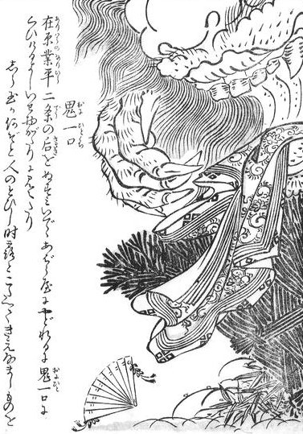
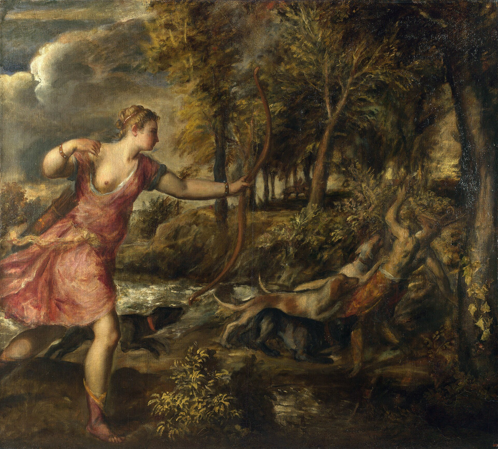
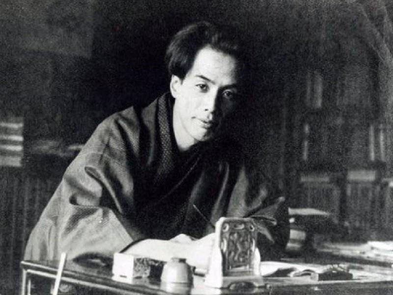

序「鬼一口」は、話そのものの名前になった
江戸の絵師鳥山石燕は、妖怪を一つずつ描いて名をつけた画集を何冊も出した。その一冊『今昔百鬼拾遺』（安永十年〔1781〕刊とされる）に、「鬼一口」という一図がある。描かれているのは、雲のように渦巻く巨大な影と、そこからはみ出す女の衣、地に落ちた扇である。顔はない。脇の詞書は在原業平の名から書き起こされている。

ここで起きていることは小さくない。『伊勢物語』第六段の「鬼はや一口に食ひてけり」という一句が、石燕の手で一体の妖怪の名前に変わったのである。もとは出来事を述べる動詞句だったものが、名詞になり、見出し語になり、図鑑の一項目になった。話が食べられて、その食べ方だけが名前として残った、と言ってもよい。
授業の第一回で、「説話」はまず一話という単位をもつ、と教わった。取り出せるから、移せる。移せるから、書き換えられる。石燕の一図は、その取り出しを極端なところまで押し進めた例である。物語の筋も、和歌も、二条の后も落ち、最後に「一口」という動作だけが残った。では、この話はこれまでに、どこで何を食べられてきたのか。それをたどるのが、このコラムの仕事である。
一鬼を人に戻す――古代ギリシアにも同じ手つきがあった
『伊勢物語』の第六段は、鬼の話として始まり、鬼の話として終わらない。歌のあとに「これは、二条の后の……」と注釈めいた文章が続き、女を取り返したのは后の兄たちだった、「それをかく鬼とはいふなりけり」と明かす。鬼は比喩だったのだ、という種明かしである。超自然を、人間の世界の出来事に読み戻す手つきだ。
この手つきには、遠い先輩がいる。紀元前四世紀ごろのギリシアに、パライパトスという人物の名で伝わる『信じがたい話について』という小さな本がある。神話の怪異を一つずつ取り上げ、「実際にはこういうことだったのだ」と合理的に説明しなおす本である。たとえばアクタイオンの話。狩人アクタイオンは女神アルテミスの水浴を見てしまい、鹿に変えられ、自分の猟犬に食い殺される。オウィディウス『変身物語』でも知られる、凄惨な神話である。

パライパトスはこれをこう読み替える。アクタイオンは狩りに夢中で、大勢の犬を養うことに財産を使い果たした。人々は「哀れなアクタイオン、自分の犬に食われてしまった」と言った。今でも、遊びで身を持ち崩した者を「女たちに食われた」と言うように――。犬に食われたのは体ではなく、財産だったというわけだ。
もちろん、パライパトスと『伊勢物語』の後半とは何の関係もない。時代も言語も、目的も違う。だが型は驚くほど似ている。「食われた」という強烈な言葉を、比喩として人間の事情に戻す。怪異をほどいて、ありうる出来事にする。ティツィアーノの画面で、女神の弓と犬たちの牙のあいだに挟まれた男は、パライパトスの読みでは、ただ借金に追われる地主になってしまう。『伊勢物語』の鬼も、後半では、妹を連れ戻しに来た兄たちになってしまう。
二人を鬼に戻す――『今昔物語集』は振り子を逆に振った
ところが『今昔物語集』の巻二十七第七は、ちょうど逆のことをする。男には名前と官職が与えられる。右近の中将在原業平、たいへんな色好み。場所も具体的になる。北山科の、荒れた山荘の、片戸の倒れた大きな校倉。ここまでは「事実」の側へ寄せる書き方である。ところが肝心の一点で、語り手は合理化を退ける。雷の夜が明けて、女は頭と衣だけになっている。その後、この倉は人を取る倉として知られるようになった。「然レバ、雷電霹靂ニハ非ズシテ、倉ニ住ケル鬼ノシケルニヤ有ケム」――あれは雷ではなく、鬼のしわざだったのだろうか。
雷という自然の説明が先に置かれ、それが打ち消されて鬼が呼び戻される。『伊勢』が鬼を人へ戻したのに対して、『今昔』は、ありうる出来事を怪異の側へ戻した。周辺を事実で固めておいて、中心にだけ闇を残す。闇がいっそう濃く見えるのは、周りが明るいからである。
説話の歴史は、この振り子の往復として見ることができる。怪異を合理化する力と、合理化されたものを再び怪異に戻す力。ギリシアの神話も、合理化されたあとでルネサンスの画家たちによって、再び血の匂いのする場面として描き直された。ティツィアーノの絵は、パライパトスの合理化をくぐり抜けたあとの、もう一度の「再神話化」である。振り子は一方に振り切れることがない。一話が取り出せる単位である限り、誰かが必ず逆向きに振り直す。
ここで大切なのは、どちらが「正しい」かではない。『今昔』の書き手が本当に鬼を信じていたかどうかは分からないし、確かめようもない。分かるのは、同じ骨組みの話を、ある書き手は人の世界へ、別の書き手は鬼の世界へ向けたということだけである。授業のプリントが「鬼に食われたと信じるか？」と問うのは、信仰を問うためではなく、この向きの違いに気づかせるためだろう。
三語り直すと何が消えるのか――ケンブリッジの実験
話を語り直すと、何が落ちるのか。この問いを実験で確かめようとした心理学者がいる。イギリスのフレデリック・バートレットである。1932年の著書『想起の心理学』（原題 Remembering）で彼が報告した実験はよく知られている。北米先住民の民話「幽霊たちの戦争」を英国の被験者に読ませ、時間をおいて思い出させる。あるいは、ある人が再生した話を次の人に読ませ、その人の再生をまた次の人へ渡していく。伝言ゲームを、紙の上で丁寧にやったのである。
話は回を重ねるごとに短くなり、なじみのない細部は落ちるか、なじみのある形に置き換えられていった。とりわけ、題名にもある「幽霊」にまつわる不可解な部分は、落ちたり、分かりやすい理屈に言い換えられたりしやすかったと報告されている。人は話を、そのままではなく、自分の知っている枠組みに合わせて覚え直す。バートレットはこの枠組みを「スキーマ」と呼んだ。
この実験と『伊勢』『今昔』の関係を、直接の因果として言うことはできない。『今昔』の書き手は伝言ゲームの被験者ではないし、そもそも『伊勢』を直接見たかどうかも分かっていない。けれども、落ちたものの顔ぶれは示唆的である。『今昔』から消えたのは、芥河という川の名、草の上の露、女の「かれは何ぞ」という問い、そして露を詠んだ和歌であった。どれも、恋の哀しみという枠組みの中でしか意味をもたない細部である。恐ろしい倉の話という別の枠組みに入れ直されたとき、それらは覚えておく理由を失った。
逆に、新しい枠組みに合うものは足される。北山科という地名、板敷の板もない荒れた家、片方の扉が倒れた倉。これらは「知らない所に泊まってはならない」という結びにとって、まさに必要な情報である。話は、聞き手が欲しがるものの形に削られ、盛られる。バートレットの被験者が幽霊を落としたように、『今昔』は露を落とし、そのかわりに倉の扉を一枚、倒しておいたのである。
四消える女は、いまも車に乗ってくる
夜道で車を走らせていると、若い女がひとりで立っている。乗せてやり、言われた住所へ向かう。着いて振り返ると、後部座席には誰もいない。家の人に話すと、その娘は何年も前に、ちょうどあの場所で亡くなったのだと言う――。アメリカの民俗学者ジャン・ハロルド・ブルンヴァンは、1981年の著書『消えるヒッチハイカー』で、こうした現代の噂話を集め、「都市伝説」という言葉を広めた。
この話の骨組みは、鬼一口とよく似ている。男が女を乗せて（連れ出して）、夜の移動の途中で、女が消える。気づいたときには、座席の湿りや置き忘れた上着のような、わずかなものしか残っていない。『今昔』の倉に残された「頭ノ限ト着タリケル衣共」と同じように、消えた人の痕跡だけが、話の証拠として残される。
そして、都市伝説の語られ方もまた、『今昔』の結びに似ている。都市伝説は、ふつう「友だちの友だちが実際に経験した話」として語られる、とよく言われる。名指しはできるが確かめられない誰か。具体的な道路の名前。そして、最後に添えられる小さな警告――あの道を夜に通るな。『今昔』もまた、業平という確かめられそうで確かめられない名を立て、北山科という地名を添え、「案内不知ザラム所ニハ、努々不立寄マジキ也」と警告して、「語リ伝ヘタルトヤ」と結ぶ。事実の足場と、確かめようのない中心と、警告。この三点セットは、九百年の時をへだてても驚くほど変わっていない。
もちろん、平安の説話と現代の都市伝説を同じものと言うことはできない。語る場も、語る人も、文字と口頭の比重も違う。だが、プリントが説話の性格として挙げた「事実性」「虚構まじり」「比較的短い」「発信者と受信者の関係性」は、そのまま都市伝説の性格表として使える。説話という術語は、古典文学のためだけの道具ではなく、人が話を渡し合うときに必ず現れる形を名づけるための道具なのかもしれない。
五露の裏には、雷がいる
このコラムの扉に置いたのは、江戸後期の絵師酒井抱一の《夏秋草図屏風》である。銀地に、夕立に打たれてうなだれる夏草と、水かさの増した流れ。一見、何ということのない草花図だが、この屏風には有名な来歴がある。抱一はこれを、尾形光琳の《風神雷神図屏風》の裏面に描いたのである。雷神の裏には雨に濡れた夏草を、風神の裏には風になびく秋草を。表で神々が雨と風を起こし、裏でその雨と風を受けた草が揺れている。両者は保存のために、のちに別々の屏風に仕立て直された。
この表と裏の関係は、『伊勢物語』第六段の構造を思い出させる。『伊勢』には、雷と露の両方がある。「神さへいといみじう鳴り」という雷の轟きと、「草の上に置きたりける露」という小さな光。雷は女の叫び「あなや」をかき消し、露は男の歌の中で「消えなましものを」という悔恨になる。雷が出来事の表であるなら、露はその裏で震えている感情である。
『今昔物語集』は、この表だけを受け継いだ。「俄ニ雷電霹靂シテ喤ケレバ」――雷はむしろ大きくなり、男は太刀を抜いてそれに立ち向かう。だが露は描かれず、歌も詠まれない。屏風でいえば、風神雷神の表だけを残して、抱一の裏面を剥がしたようなものである。剥がされた裏面は、なくなったのではない。『伊勢物語』の側に残っている。二つの話を並べて読むとき、私たちはようやく一双の屏風の表と裏を、同時に見ることができる。
六もう一人の「芥川」が、今昔を食べにきた
話を近代へ飛ばそう。『伊勢物語』の川の名と同じ字を名に持つ小説家、芥川龍之介である。名前が同じなのはまったくの偶然にすぎない。だが、この偶然はできすぎている。芥川は、『今昔物語集』から最も多くを食べた近代の作家だったからだ。

1915年の「羅生門」をはじめ、「鼻」「芋粥」など、芥川の初期の短編の多くは『今昔物語集』などの説話を素材にしている。彼は古い一話を取り出し、そこに近代の心理を詰めこんで、まったく別の小説に仕立て直した。晩年には「今昔物語鑑賞」という文章も書き、この集の生々しい魅力を高く評価したことで知られる。明治以降、『今昔物語集』が広く読まれるようになるうえで、芥川の仕事は大きな役割を果たした。
授業のプリントで「説話とは①」の例文に「芥川は今昔物語集の説話を翻案した」という一文があったのを思い出したい。翻案とは、一話を取り出し、骨組みを借りて、別の肉をつけることである。石燕は鬼一口を妖怪の名にし、芥川は今昔の説話を近代小説にした。どちらも一話を「食べた」のであり、食べられた一話は、食べた者の身体の一部として生き延びた。
結説話とは、食べ残しのかたちである
ここまでの道のりを振り返ろう。『伊勢物語』は鬼を兄たちへ戻し、『今昔物語集』は兄たちを再び鬼へ戻した。語り直すたびに、露や和歌のように枠組みに合わないものは落ち、倉の扉のように枠組みに合うものが足された。現代の都市伝説は同じ骨組みで女を消し、石燕は「一口」という動作だけを名前にし、芥川は一話を食べて近代の小説にした。
そう考えると、『今昔物語集』の倉の場面は、説話というものの自画像のように見えてくる。夜が明けると、女はいない。残っているのは、頭と、着ていた衣だけである。女という全体は鬼に食われ、しかし形を示すのに必要な最小限は残された。説話もまた、長い物語が時代という鬼に食べられたあとに残る、頭と衣なのではないか。全体は失われても、「誰が」「どうなった」を示す芯だけは残る。その芯を拾って、次の時代の誰かが、また新しい衣を着せる。
次回の授業のテーマは「享受史」である。この話が、あるいは『今昔物語集』という一冊が、どの時代の誰に、どう食べられてきたのか。石燕と芥川は、その長い食卓のほんの二人にすぎない。
物語は一口で食われ、
頭と衣だけが、説話として残る。
本棚このコラムの書架
参照した本 ── 本文が依拠した原典
- 『伊勢物語』第六段「芥河」 平安時代本文は授業の配付資料による。後半の「それをかく鬼とはいふなりけり」が、第一章の出発点。
- 『今昔物語集』巻二十七「在原業平中将女、被噉鬼語第七」 12世紀前半本文は授業の配付資料による。「雷電霹靂ニハ非ズシテ」の反転が第二章、結びの警告が第四章の材料。
- パライパトス『信じがたい話について』 前4世紀ごろアクタイオンの合理化（第一章）。英訳をオンラインで確認した。
- F. C. Bartlett, Remembering Cambridge University Press, 1932「幽霊たちの戦争」の再生実験（第三章）。
※パライパトスとバートレットは原典を通読しておらず、オンライン資料・概説で該当箇所を確認した。芥川「今昔物語鑑賞」（1927年）は本文を確認していないため、引用はしていない。
参考図書 ── さらに読むために
- 小峯和明『説話の森』 岩波現代文庫（ISBN 4006020414）授業の講義指定図書。説話という「森」の歩き方を、具体的な話に即して教えてくれる。
- F. C. バートレット『想起の心理学』宇津木保・辻正三訳 誠信書房、1983年第三章の実験の原典の邦訳。語り直しで話がどう変わるかを、実験の記録として読める。
- ジャン・ハロルド・ブルンヴァン『消えるヒッチハイカー』満園真木訳 東京創元社、2026年（旧訳は新宿書房、1988年）都市伝説研究の古典。今昔の結びと読み比べると、「語り伝え」の型が見えてくる。
- 『今昔物語集』1〜5（新日本古典文学大系） 岩波書店授業の講義指定図書で、期末レポートの引用元に指定されている本文。
図版の出典
- 酒井抱一《夏秋草図屏風》右隻：File:Natu-aki kusa zu byoubu.jpg（Public domain。縮小のみ）
- 鳥山石燕「鬼一口」：File:SekienOni-hito-kuchi.jpg（Public domain）
- ティツィアーノ《アクタイオンの死》：File:Actaeon.jpg（Public domain。縮小のみ）
- 芥川龍之介肖像：File:Akutagawa.ryunosuke.jpg（Public domain）


事実確認に用いた資料
- Palaephatus, De Incredibilibus（Perseids、英訳）：アクタイオンの合理化の内容。
- Wikipedia「Palaephatus」：著作と年代の概略。
- 文化遺産オンラインほか：《夏秋草図屏風》が光琳《風神雷神図屏風》の裏面に描かれたこと、文政4年頃、東京国立博物館蔵、のちに分離されたこと。
- Real Sound ブック（2026年7月）：『消えるヒッチハイカー』旧訳（新宿書房、1988年）と新訳（東京創元社）の書誌。
- CiNii：バートレット『想起の心理学』（誠信書房、1983年）の書誌。
- 鳥山石燕『今昔百鬼拾遺』の刊年は、Wikimedia Commons の記載（1780年）と一般の解説（安永10年＝1781年）に幅があるため、「とされる」とした。